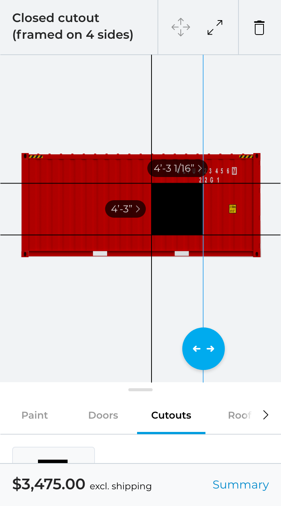
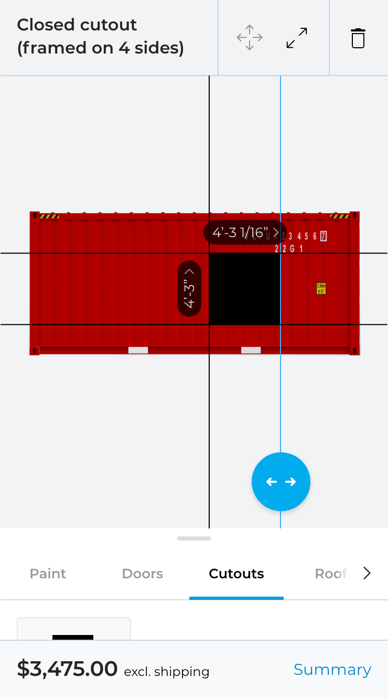
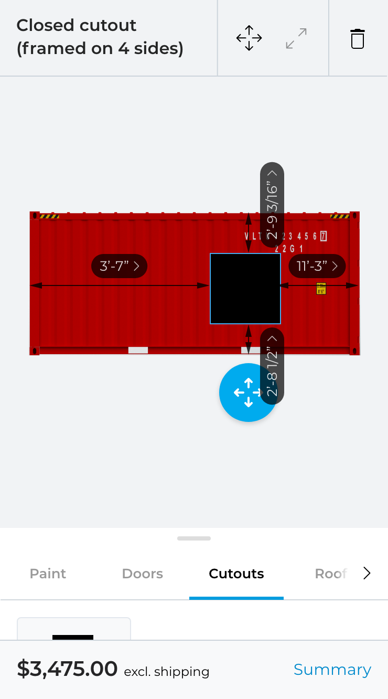
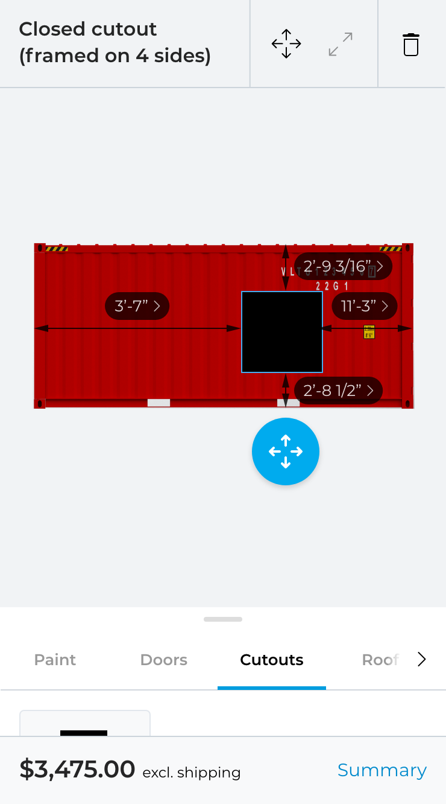

Sizing and positioning  I made the measurements less technical and gave them a more refined appearance by making them smaller, adding the round corners and removing the underline. I added a little arrow next to the measurement to make them appear as something clickable.  Rotating the vertical measurement helps but creates another problem(see below).  To be consistent it would make sense to also rotate the vertical measurements in positioning mode but could make the measurement labels overlap the positioning button. How about keeping the labels horizontal but adding arrows in sizing mode? I think this makes it clear where the measurements belong to and we dont have the problem with labels overlapping the button.  The same solution applied to positioning mode.